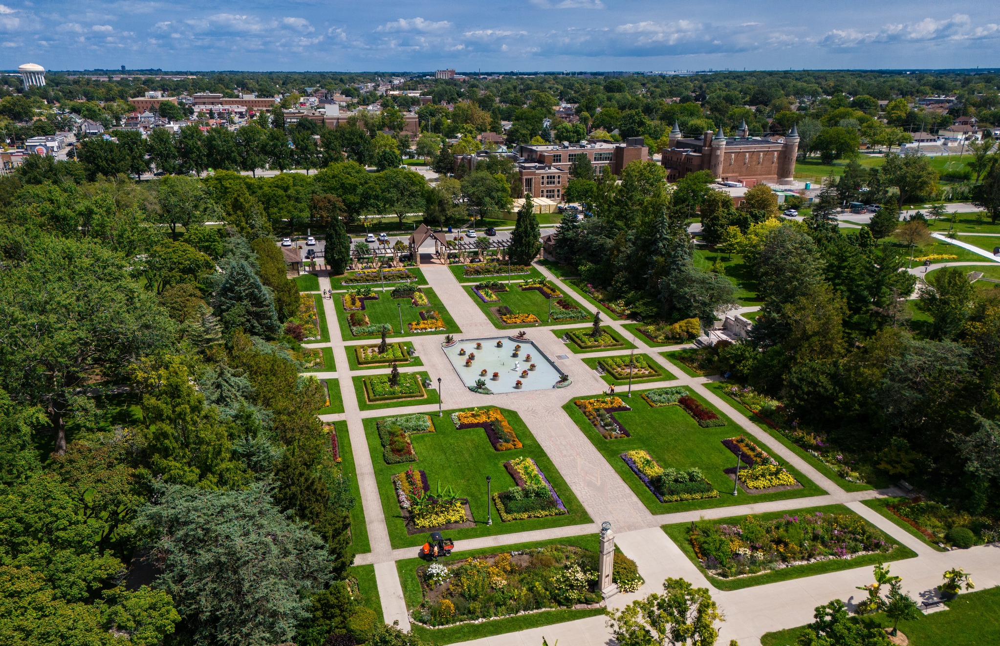

Address
125 Tecumseh Rd E, Windsor, Ontario N8X 2P7

Image Source: Fly With Rye (Instagram)
About Jackson Park
Jackson Park is one of Windsor’s most iconic and historic green spaces, known for its stunning floral displays and peaceful atmosphere. The park spans over 60 acres and is home to more than 10,000 plants and seasonal flower arrangements that make it a favourite among photographers and visitors.
A highlight of the park is the World War II Memorial, featuring two replica Spitfire and Hurricane aircrafts, honouring the bravery of Canadian veterans. The park also includes walking trails, sports fields, and beautifully landscaped gardens that change with the seasons.
During winter, Jackson Park hosts the “Bright Lights Windsor” festival, transforming the park into a dazzling light show that draws thousands of visitors. With its blend of nature, history, and community events, Jackson Park stands as a symbol of Windsor’s pride and cultural heritage.